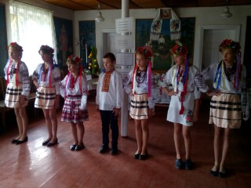
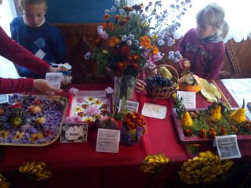
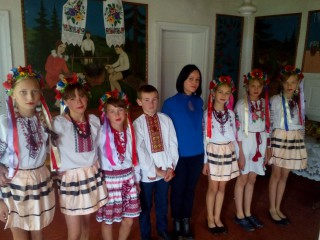

День врожаю
Другого жовтня 2017 року відбулося свято квітів та врожаю «Український ярмарок»., на якому було представлено вироби з овочів , фруктів та квіткові композиції. Вступну частину підготувала та провела педагог-організатор Григоращук Тетяна Іванівна та учні 5-6 класів.
Захід був цікавим та змістовним: дотримано формат справжнього українського ярмарку з веселощами, українським танцем та конкурсами. Переможці конкурсів отримали солодкі призи.

Композиції відзначалися творчим підходом, оригінальністю і пов’язані із реаліями сьогодення, кожен клас підготував більше ,ніж 5 композицій і виявив неабияку креативність.
